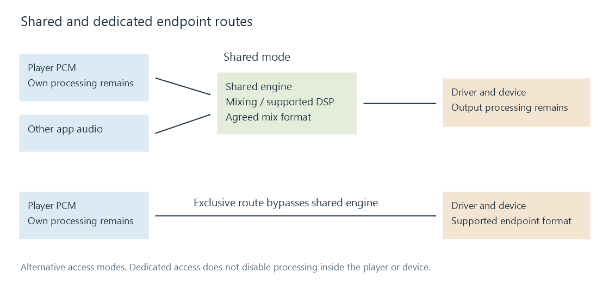

Exclusive-mode audio output
Exclusive audio output grants an application a dedicated endpoint route that bypasses a shared mixer while retaining the device's format and timing requirements.
Exclusive output gives an application a dedicated route to an audio endpoint under the platform's access rules. Its common purpose is to bypass a shared mixing stage and negotiate the stream directly with the output device. In an Emby route, this access choice belongs to the app and device performing playback.
In Windows WASAPI, this is an explicit sharing mode. A Linux application using a direct ALSA hardware PCM can create a comparable dedicated route, although the APIs and device-ownership rules differ. The general idea should not be mistaken for one identical feature on every operating system.

What changes when the mixer is bypassed
| Question | Shared route | Dedicated endpoint route |
|---|---|---|
| Can several ordinary app streams contribute together? | Normally supported by the mixer | Competing access can be rejected or interrupted under platform policy |
| Which format must be accepted? | A format supported by the shared route | A format supported by the endpoint for this access mode |
| Who keeps the output supplied? | App and shared engine, at their respective boundaries | App and driver/device route |
| Does the mode prove that samples are unchanged? | No | No |
A source rate of 44.1 kHz can be negotiated directly when the endpoint supports it. If the endpoint only accepts 48 kHz for the selected configuration, the player must choose a supported alternative, convert, or report the failure. Bypassing the shared mixer cannot make unsupported hardware formats valid.
Changing format between tracks can also require stopping and reinitializing the output. That can affect gapless playback, even if both formats work individually.
Ownership and timing become visible
If another application already owns the endpoint, opening an exclusive stream can fail. A device can also be invalidated by unplugging it or changing its resources. A player needs a defined response, such as retrying a suitable endpoint, falling back to an accepted route, or informing the user.
Once the stream is running, the application must meet its buffer deadlines. A dedicated route does not protect an audio thread from a delayed decoder or unavailable network data. Reducing buffers increases responsiveness while leaving less queued audio to cover a stall.
These mechanics explain why a device that sounds fine in shared mode can fail to start or break up under another mode without any change to the stored soundtrack.
The rest of the signal path still exists
Player volume, ReplayGain, equalization, resampling and downmixing happen before the endpoint if the player applies them. Driver or device processing can happen afterward. Exclusive access bypasses the defined shared engine; it does not establish that all of those other operations are absent.
A bit-perfect claim therefore needs its own sample-domain evidence. Similarly, an encoded bitstream needs the proper supported transport format rather than ordinary PCM simply placed in an exclusive buffer.